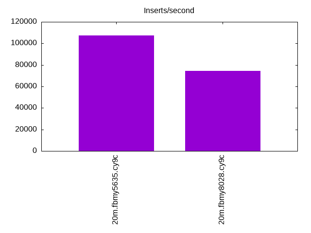
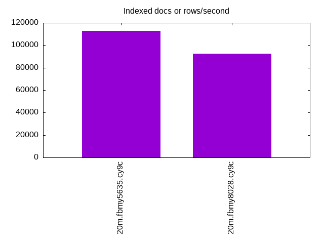
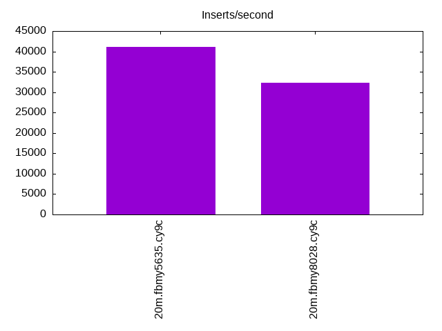
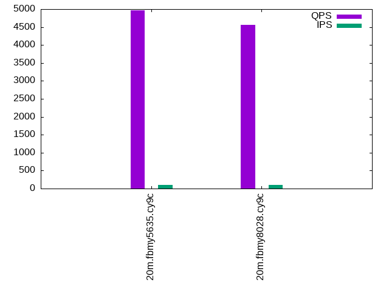
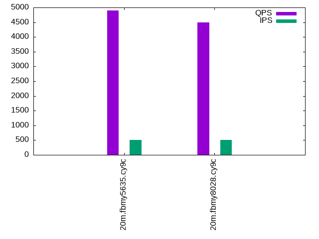
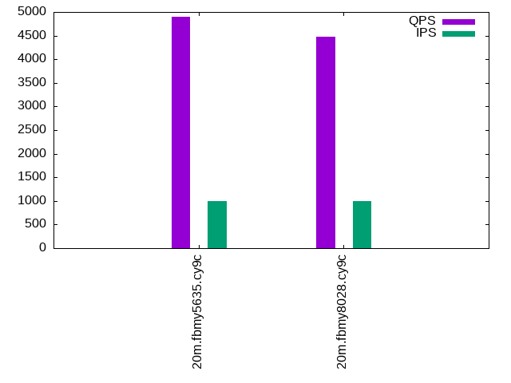

This is a report for the insert benchmark with 20M docs and 1 client(s). It is generated by scripts (bash, awk, sed) and Tufte might not be impressed. An overview of the insert benchmark is here and a short update is here. Below, by DBMS, I mean DBMS+version.config. An example is my8020.c10b40 where my means MySQL, 8020 is version 8.0.20 and c10b40 is the name for the configuration file.
The test server is an Intel NUC with 4 cores, 16G RAM and a Samsung 970 EVO. More details are here. Clients and the DBMS share one server. The per-database configs are in the per-database subdirectories here.
The tested DBMS are:
The numbers are inserts/s for l.i0 and l.i1, indexed docs (or rows) /s for l.x and queries/s for q*.2. The values are the average rate over the entire test for inserts (IPS) and queries (QPS). The range of values for IPS and QPS is split into 3 parts: bottom 25%, middle 50%, top 25%. Values in the bottom 25% have a red background, values in the top 25% have a green background and values in the middle have no color. A gray background is used for values that can be ignored because the DBMS did not sustain the target insert rate. Red backgrounds are not used when the minimum value is within 80% of the max value.
| dbms | l.i0 | l.x | l.i1 | q100.1 | q500.1 | q1000.1 |
|---|---|---|---|---|---|---|
| 20m.fbmy5635.cy9c | 107527 | 112921 | 41068 | 4958 | 4900 | 4891 |
| 20m.fbmy8028.cy9c | 74349 | 92627 | 32362 | 4558 | 4493 | 4479 |
This lists the average rate of inserts/s for the tests that do inserts concurrent with queries. For such tests the query rate is listed in the table above. The read+write tests are setup so that the insert rate should match the target rate every second. Cells that are not at least 95% of the target have a red background to indicate a failure to satisfy the target.
| dbms | q100.1 | q500.1 | q1000.1 |
|---|---|---|---|
| fbmy5635.cy9c | 100 | 500 | 999 |
| fbmy8028.cy9c | 100 | 499 | 999 |
| target | 100 | 500 | 1000 |
l.i0: load without secondary indexes. Graphs for performance per 1-second interval are here.
Average throughput:
Insert response time histogram: each cell has the percentage of responses that take <= the time in the header and max is the max response time in seconds. For the max column values in the top 25% of the range have a red background and in the bottom 25% of the range have a green background. The red background is not used when the min value is within 80% of the max value.
| dbms | 256us | 1ms | 4ms | 16ms | 64ms | 256ms | 1s | 4s | 16s | gt | max |
|---|---|---|---|---|---|---|---|---|---|---|---|
| fbmy5635.cy9c | 98.393 | 1.563 | 0.040 | 0.001 | 0.003 | 0.098 | |||||
| fbmy8028.cy9c | 99.835 | 0.114 | 0.051 | 0.062 |
Performance metrics for the DBMS listed above. Some are normalized by throughput, others are not. Legend for results is here.
ips qps rps rmbps wps wmbps rpq rkbpq wpi wkbpi csps cpups cspq cpupq dbgb1 dbgb2 rss maxop p50 p99 tag 107527 0 0 0.0 42.6 18.3 0.000 0.000 0.000 0.174 10680 42.7 0.099 16 0.7 1.8 0.2 0.098 108884 94097 20m.fbmy5635.cy9c 74349 0 0 0.0 38.4 14.5 0.000 0.000 0.001 0.199 7679 36.4 0.103 20 0.7 1.9 0.6 0.062 74648 68324 20m.fbmy8028.cy9c
l.x: create secondary indexes.
Average throughput:
Performance metrics for the DBMS listed above. Some are normalized by throughput, others are not. Legend for results is here.
ips qps rps rmbps wps wmbps rpq rkbpq wpi wkbpi csps cpups cspq cpupq dbgb1 dbgb2 rss maxop p50 p99 tag 112921 0 0 0.0 31.9 17.0 0.000 0.000 0.000 0.154 557 24.5 0.005 9 1.5 2.5 1.3 0.004 NA NA 20m.fbmy5635.cy9c 92627 0 0 0.0 24.4 14.1 0.000 0.000 0.000 0.156 514 24.6 0.006 11 1.4 2.7 1.9 0.008 NA NA 20m.fbmy8028.cy9c
l.i1: continue load after secondary indexes created. Graphs for performance per 1-second interval are here.
Average throughput:
Insert response time histogram: each cell has the percentage of responses that take <= the time in the header and max is the max response time in seconds. For the max column values in the top 25% of the range have a red background and in the bottom 25% of the range have a green background. The red background is not used when the min value is within 80% of the max value.
| dbms | 256us | 1ms | 4ms | 16ms | 64ms | 256ms | 1s | 4s | 16s | gt | max |
|---|---|---|---|---|---|---|---|---|---|---|---|
| fbmy5635.cy9c | 5.462 | 94.446 | 0.089 | 0.003 | nonzero | 0.079 | |||||
| fbmy8028.cy9c | 99.835 | 0.144 | 0.021 | 0.050 |
Performance metrics for the DBMS listed above. Some are normalized by throughput, others are not. Legend for results is here.
ips qps rps rmbps wps wmbps rpq rkbpq wpi wkbpi csps cpups cspq cpupq dbgb1 dbgb2 rss maxop p50 p99 tag 41068 0 12 1.5 93.1 55.0 0.000 0.038 0.002 1.372 9430 54.8 0.230 53 2.9 4.6 2.1 0.079 40606 34775 20m.fbmy5635.cy9c 32362 0 10 1.2 63.4 36.7 0.000 0.038 0.002 1.162 7506 48.5 0.232 60 2.8 4.7 2.6 0.050 32164 27936 20m.fbmy8028.cy9c
q100.1: range queries with 100 insert/s per client. Graphs for performance per 1-second interval are here.
Average throughput:
Query response time histogram: each cell has the percentage of responses that take <= the time in the header and max is the max response time in seconds. For max values in the top 25% of the range have a red background and in the bottom 25% of the range have a green background. The red background is not used when the min value is within 80% of the max value.
| dbms | 256us | 1ms | 4ms | 16ms | 64ms | 256ms | 1s | 4s | 16s | gt | max |
|---|---|---|---|---|---|---|---|---|---|---|---|
| fbmy5635.cy9c | 99.004 | 0.995 | nonzero | 0.002 | |||||||
| fbmy8028.cy9c | 98.060 | 1.940 | nonzero | 0.002 |
Insert response time histogram: each cell has the percentage of responses that take <= the time in the header and max is the max response time in seconds. For max values in the top 25% of the range have a red background and in the bottom 25% of the range have a green background. The red background is not used when the min value is within 80% of the max value.
| dbms | 256us | 1ms | 4ms | 16ms | 64ms | 256ms | 1s | 4s | 16s | gt | max |
|---|---|---|---|---|---|---|---|---|---|---|---|
| fbmy5635.cy9c | 0.042 | 99.931 | 0.028 | 0.004 | |||||||
| fbmy8028.cy9c | 99.903 | 0.083 | 0.014 | 0.019 |
Performance metrics for the DBMS listed above. Some are normalized by throughput, others are not. Legend for results is here.
ips qps rps rmbps wps wmbps rpq rkbpq wpi wkbpi csps cpups cspq cpupq dbgb1 dbgb2 rss maxop p50 p99 tag 100 4958 0 0.0 3.4 0.1 0.000 0.000 0.034 1.465 19056 25.4 3.843 205 2.8 4.6 4.0 0.002 4973 4779 20m.fbmy5635.cy9c 100 4558 0 0.0 3.2 0.1 0.000 0.000 0.032 0.563 17675 25.9 3.877 227 2.8 4.8 4.3 0.002 4539 4347 20m.fbmy8028.cy9c
q500.1: range queries with 500 insert/s per client. Graphs for performance per 1-second interval are here.
Average throughput:
Query response time histogram: each cell has the percentage of responses that take <= the time in the header and max is the max response time in seconds. For max values in the top 25% of the range have a red background and in the bottom 25% of the range have a green background. The red background is not used when the min value is within 80% of the max value.
| dbms | 256us | 1ms | 4ms | 16ms | 64ms | 256ms | 1s | 4s | 16s | gt | max |
|---|---|---|---|---|---|---|---|---|---|---|---|
| fbmy5635.cy9c | 98.460 | 1.539 | 0.001 | 0.003 | |||||||
| fbmy8028.cy9c | 97.529 | 2.469 | 0.002 | nonzero | 0.005 |
Insert response time histogram: each cell has the percentage of responses that take <= the time in the header and max is the max response time in seconds. For max values in the top 25% of the range have a red background and in the bottom 25% of the range have a green background. The red background is not used when the min value is within 80% of the max value.
| dbms | 256us | 1ms | 4ms | 16ms | 64ms | 256ms | 1s | 4s | 16s | gt | max |
|---|---|---|---|---|---|---|---|---|---|---|---|
| fbmy5635.cy9c | 0.319 | 99.642 | 0.039 | 0.007 | |||||||
| fbmy8028.cy9c | 99.894 | 0.075 | 0.031 | 0.019 |
Performance metrics for the DBMS listed above. Some are normalized by throughput, others are not. Legend for results is here.
ips qps rps rmbps wps wmbps rpq rkbpq wpi wkbpi csps cpups cspq cpupq dbgb1 dbgb2 rss maxop p50 p99 tag 500 4900 0 0.0 3.7 0.5 0.000 0.000 0.007 0.948 18892 25.8 3.856 211 3.0 3.1 4.8 0.003 4907 4747 20m.fbmy5635.cy9c 499 4493 0 0.0 3.5 0.3 0.000 0.000 0.007 0.708 17485 26.2 3.892 233 3.0 3.2 4.8 0.005 4491 4219 20m.fbmy8028.cy9c
q1000.1: range queries with 1000 insert/s per client. Graphs for performance per 1-second interval are here.
Average throughput:
Query response time histogram: each cell has the percentage of responses that take <= the time in the header and max is the max response time in seconds. For max values in the top 25% of the range have a red background and in the bottom 25% of the range have a green background. The red background is not used when the min value is within 80% of the max value.
| dbms | 256us | 1ms | 4ms | 16ms | 64ms | 256ms | 1s | 4s | 16s | gt | max |
|---|---|---|---|---|---|---|---|---|---|---|---|
| fbmy5635.cy9c | 97.897 | 2.100 | 0.003 | nonzero | 0.004 | ||||||
| fbmy8028.cy9c | 96.634 | 3.359 | 0.007 | nonzero | 0.007 |
Insert response time histogram: each cell has the percentage of responses that take <= the time in the header and max is the max response time in seconds. For max values in the top 25% of the range have a red background and in the bottom 25% of the range have a green background. The red background is not used when the min value is within 80% of the max value.
| dbms | 256us | 1ms | 4ms | 16ms | 64ms | 256ms | 1s | 4s | 16s | gt | max |
|---|---|---|---|---|---|---|---|---|---|---|---|
| fbmy5635.cy9c | 0.150 | 99.812 | 0.036 | 0.001 | 0.033 | ||||||
| fbmy8028.cy9c | 99.887 | 0.068 | 0.044 | 0.039 |
Performance metrics for the DBMS listed above. Some are normalized by throughput, others are not. Legend for results is here.
ips qps rps rmbps wps wmbps rpq rkbpq wpi wkbpi csps cpups cspq cpupq dbgb1 dbgb2 rss maxop p50 p99 tag 999 4891 0 0.0 5.8 1.9 0.000 0.000 0.006 1.946 18982 26.7 3.881 218 3.3 3.7 8.5 0.004 4892 4699 20m.fbmy5635.cy9c 999 4479 0 0.0 5.1 1.3 0.000 0.000 0.005 1.357 17544 27.2 3.917 243 3.3 3.9 7.7 0.007 4491 4203 20m.fbmy8028.cy9c
l.i0: load without secondary indexes
Performance metrics for all DBMS, not just the ones listed above. Some are normalized by throughput, others are not. Legend for results is here.
ips qps rps rmbps wps wmbps rpq rkbpq wpi wkbpi csps cpups cspq cpupq dbgb1 dbgb2 rss maxop p50 p99 tag 107527 0 0 0.0 42.6 18.3 0.000 0.000 0.000 0.174 10680 42.7 0.099 16 0.7 1.8 0.2 0.098 108884 94097 20m.fbmy5635.cy9c 74349 0 0 0.0 38.4 14.5 0.000 0.000 0.001 0.199 7679 36.4 0.103 20 0.7 1.9 0.6 0.062 74648 68324 20m.fbmy8028.cy9c
l.x: create secondary indexes
Performance metrics for all DBMS, not just the ones listed above. Some are normalized by throughput, others are not. Legend for results is here.
ips qps rps rmbps wps wmbps rpq rkbpq wpi wkbpi csps cpups cspq cpupq dbgb1 dbgb2 rss maxop p50 p99 tag 112921 0 0 0.0 31.9 17.0 0.000 0.000 0.000 0.154 557 24.5 0.005 9 1.5 2.5 1.3 0.004 NA NA 20m.fbmy5635.cy9c 92627 0 0 0.0 24.4 14.1 0.000 0.000 0.000 0.156 514 24.6 0.006 11 1.4 2.7 1.9 0.008 NA NA 20m.fbmy8028.cy9c
l.i1: continue load after secondary indexes created
Performance metrics for all DBMS, not just the ones listed above. Some are normalized by throughput, others are not. Legend for results is here.
ips qps rps rmbps wps wmbps rpq rkbpq wpi wkbpi csps cpups cspq cpupq dbgb1 dbgb2 rss maxop p50 p99 tag 41068 0 12 1.5 93.1 55.0 0.000 0.038 0.002 1.372 9430 54.8 0.230 53 2.9 4.6 2.1 0.079 40606 34775 20m.fbmy5635.cy9c 32362 0 10 1.2 63.4 36.7 0.000 0.038 0.002 1.162 7506 48.5 0.232 60 2.8 4.7 2.6 0.050 32164 27936 20m.fbmy8028.cy9c
q100.1: range queries with 100 insert/s per client
Performance metrics for all DBMS, not just the ones listed above. Some are normalized by throughput, others are not. Legend for results is here.
ips qps rps rmbps wps wmbps rpq rkbpq wpi wkbpi csps cpups cspq cpupq dbgb1 dbgb2 rss maxop p50 p99 tag 100 4958 0 0.0 3.4 0.1 0.000 0.000 0.034 1.465 19056 25.4 3.843 205 2.8 4.6 4.0 0.002 4973 4779 20m.fbmy5635.cy9c 100 4558 0 0.0 3.2 0.1 0.000 0.000 0.032 0.563 17675 25.9 3.877 227 2.8 4.8 4.3 0.002 4539 4347 20m.fbmy8028.cy9c
q500.1: range queries with 500 insert/s per client
Performance metrics for all DBMS, not just the ones listed above. Some are normalized by throughput, others are not. Legend for results is here.
ips qps rps rmbps wps wmbps rpq rkbpq wpi wkbpi csps cpups cspq cpupq dbgb1 dbgb2 rss maxop p50 p99 tag 500 4900 0 0.0 3.7 0.5 0.000 0.000 0.007 0.948 18892 25.8 3.856 211 3.0 3.1 4.8 0.003 4907 4747 20m.fbmy5635.cy9c 499 4493 0 0.0 3.5 0.3 0.000 0.000 0.007 0.708 17485 26.2 3.892 233 3.0 3.2 4.8 0.005 4491 4219 20m.fbmy8028.cy9c
q1000.1: range queries with 1000 insert/s per client
Performance metrics for all DBMS, not just the ones listed above. Some are normalized by throughput, others are not. Legend for results is here.
ips qps rps rmbps wps wmbps rpq rkbpq wpi wkbpi csps cpups cspq cpupq dbgb1 dbgb2 rss maxop p50 p99 tag 999 4891 0 0.0 5.8 1.9 0.000 0.000 0.006 1.946 18982 26.7 3.881 218 3.3 3.7 8.5 0.004 4892 4699 20m.fbmy5635.cy9c 999 4479 0 0.0 5.1 1.3 0.000 0.000 0.005 1.357 17544 27.2 3.917 243 3.3 3.9 7.7 0.007 4491 4203 20m.fbmy8028.cy9c
Insert response time histogram
256us 1ms 4ms 16ms 64ms 256ms 1s 4s 16s gt max tag 0.000 98.393 1.563 0.040 0.001 0.003 0.000 0.000 0.000 0.000 0.098 fbmy5635.cy9c 0.000 0.000 99.835 0.114 0.051 0.000 0.000 0.000 0.000 0.000 0.062 fbmy8028.cy9c
TODO - determine whether there is data for create index response time
Insert response time histogram
256us 1ms 4ms 16ms 64ms 256ms 1s 4s 16s gt max tag 0.000 5.462 94.446 0.089 0.003 nonzero 0.000 0.000 0.000 0.000 0.079 fbmy5635.cy9c 0.000 0.000 99.835 0.144 0.021 0.000 0.000 0.000 0.000 0.000 0.050 fbmy8028.cy9c
Query response time histogram
256us 1ms 4ms 16ms 64ms 256ms 1s 4s 16s gt max tag 99.004 0.995 nonzero 0.000 0.000 0.000 0.000 0.000 0.000 0.000 0.002 fbmy5635.cy9c 98.060 1.940 nonzero 0.000 0.000 0.000 0.000 0.000 0.000 0.000 0.002 fbmy8028.cy9c
Insert response time histogram
256us 1ms 4ms 16ms 64ms 256ms 1s 4s 16s gt max tag 0.000 0.042 99.931 0.028 0.000 0.000 0.000 0.000 0.000 0.000 0.004 fbmy5635.cy9c 0.000 0.000 99.903 0.083 0.014 0.000 0.000 0.000 0.000 0.000 0.019 fbmy8028.cy9c
Query response time histogram
256us 1ms 4ms 16ms 64ms 256ms 1s 4s 16s gt max tag 98.460 1.539 0.001 0.000 0.000 0.000 0.000 0.000 0.000 0.000 0.003 fbmy5635.cy9c 97.529 2.469 0.002 nonzero 0.000 0.000 0.000 0.000 0.000 0.000 0.005 fbmy8028.cy9c
Insert response time histogram
256us 1ms 4ms 16ms 64ms 256ms 1s 4s 16s gt max tag 0.000 0.319 99.642 0.039 0.000 0.000 0.000 0.000 0.000 0.000 0.007 fbmy5635.cy9c 0.000 0.000 99.894 0.075 0.031 0.000 0.000 0.000 0.000 0.000 0.019 fbmy8028.cy9c
Query response time histogram
256us 1ms 4ms 16ms 64ms 256ms 1s 4s 16s gt max tag 97.897 2.100 0.003 nonzero 0.000 0.000 0.000 0.000 0.000 0.000 0.004 fbmy5635.cy9c 96.634 3.359 0.007 nonzero 0.000 0.000 0.000 0.000 0.000 0.000 0.007 fbmy8028.cy9c
Insert response time histogram
256us 1ms 4ms 16ms 64ms 256ms 1s 4s 16s gt max tag 0.000 0.150 99.812 0.036 0.001 0.000 0.000 0.000 0.000 0.000 0.033 fbmy5635.cy9c 0.000 0.000 99.887 0.068 0.044 0.000 0.000 0.000 0.000 0.000 0.039 fbmy8028.cy9c